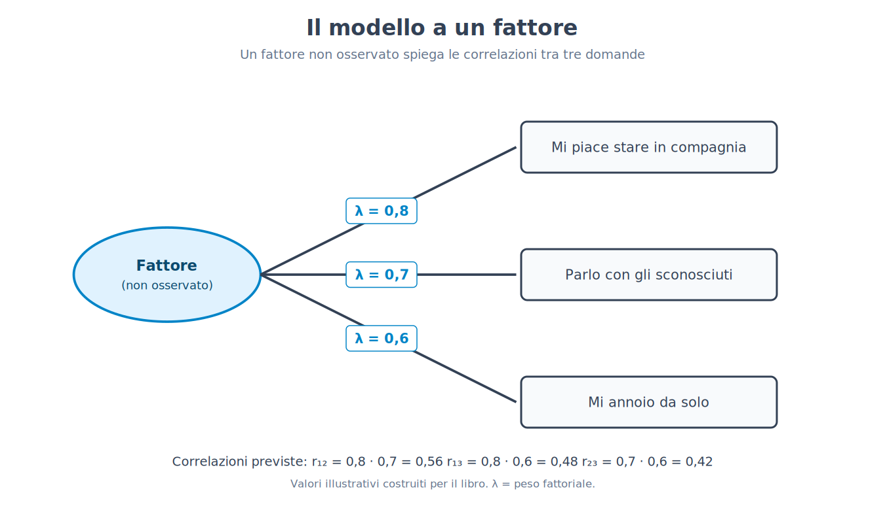
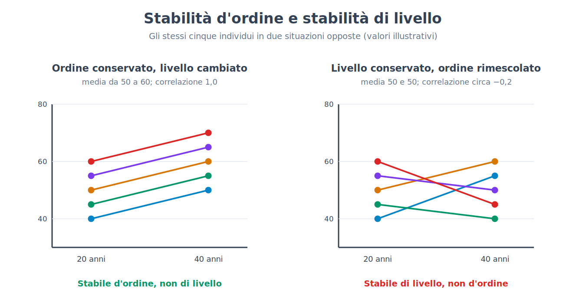
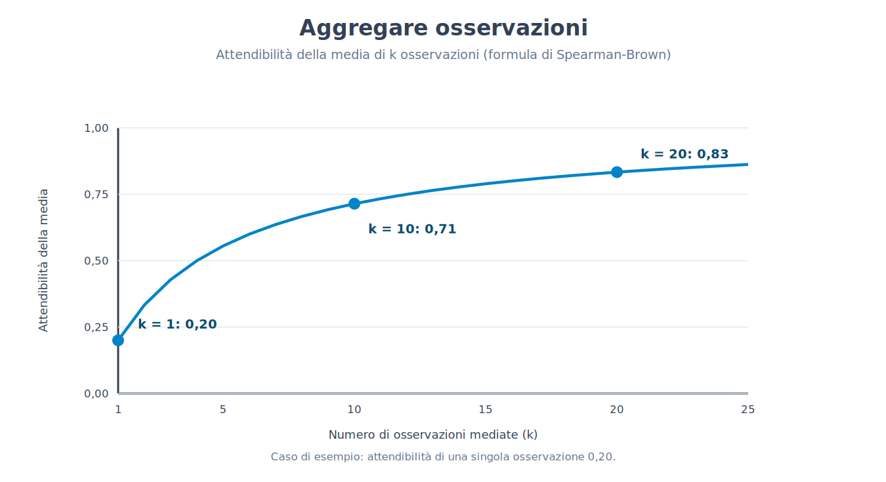
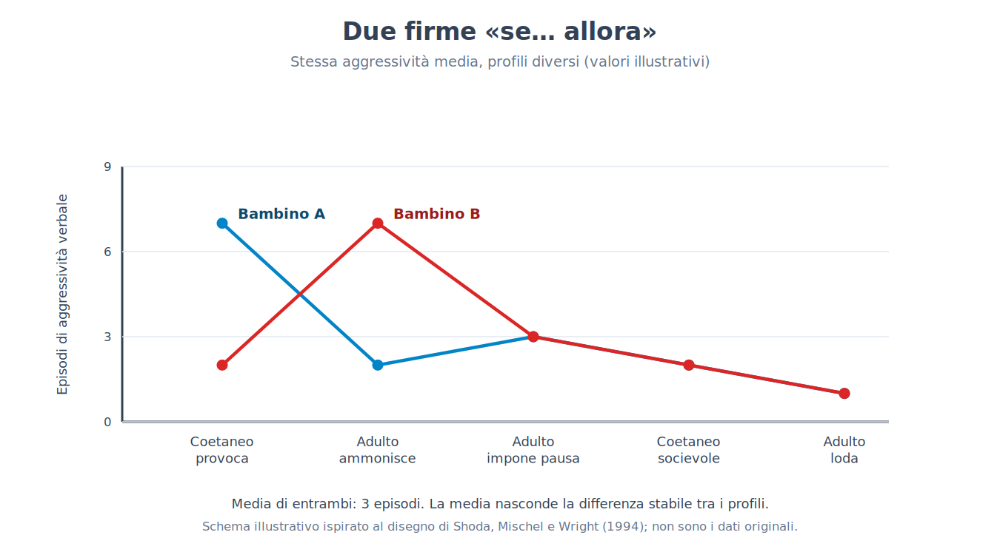
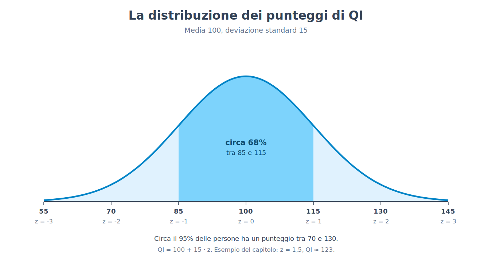
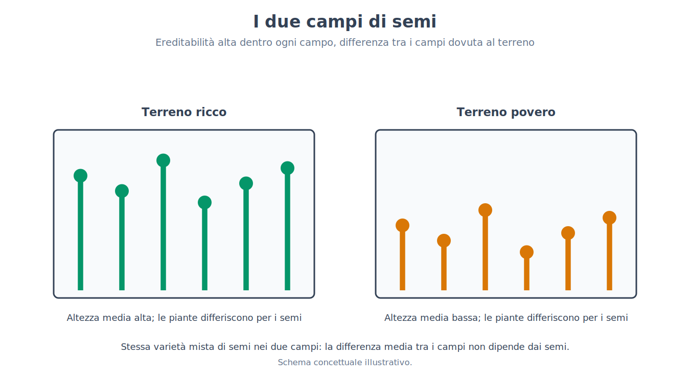
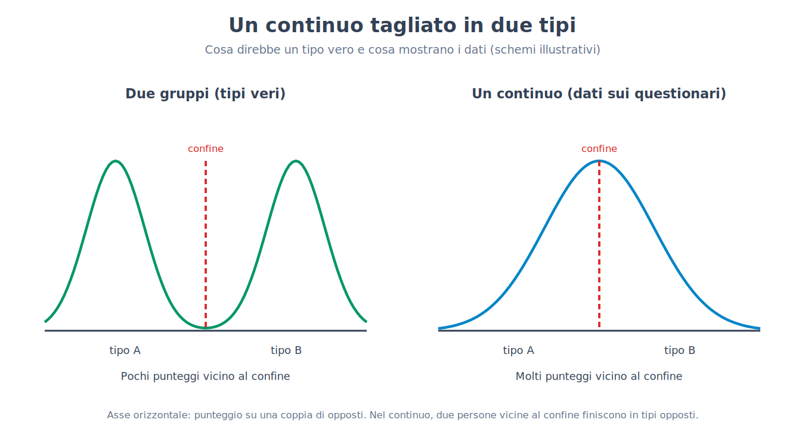

Parte X. Personalità e differenze individuali
Capitolo 61 — Descrivere le differenze
[IN DUE PAROLE]
Per studiare le differenze di personalità bisogna prima decidere in quante e quali dimensioni descriverle. Questo capitolo espone l'idea che le lingue abbiano già condensato queste dimensioni nelle parole per descrivere le persone, la tecnica statistica (l'analisi fattoriale) con cui si cerca la struttura dietro migliaia di aggettivi, il modello a cinque fattori che ne è emerso, e le ragioni per cui quel modello è una descrizione utile e non una scoperta su come è fatta la mente.
La parte precedente si è chiusa con una domanda: se le persone cambiano nel corso della vita, che cosa resta stabile nelle differenze tra loro? Per rispondere bisogna prima avere un modo di descrivere quelle differenze, e questo è meno ovvio di quanto sembri. Prova a descrivere un amico senza usare più di cinque parole. Probabilmente sceglierai aggettivi come «puntuale», «timido», «generoso», «ansioso». Ognuno di quegli aggettivi cattura qualcosa che altri aggettivi catturano solo in parte: una persona puntuale è spesso anche ordinata, e una persona timida è raramente anche socievole. Se l'italiano, come ogni altra lingua, offre migliaia di parole di questo tipo, la domanda è se dietro tutte quelle parole ci sia un numero piccolo di dimensioni, e quante.
L'ipotesi lessicale
L'ipotesi lessicale (lexical hypothesis) sostiene che le differenze individuali più importanti per la vita sociale si siano depositate nel linguaggio: se una differenza tra persone conta nei rapporti quotidiani, le persone avranno sentito il bisogno di una parola per indicarla. Ne segue un metodo, che consiste nel partire dal dizionario invece che dalla teoria. È una scelta di prudenza: nessun ricercatore deve decidere in anticipo quali tratti esistono, e il vocabolario di una lingua rappresenta il lavoro di molte generazioni di osservatori.
[IL DISEGNO DELL'ESPERIMENTO]
Il primo grande censimento fu quello di Gordon Allport e Henry Odbert (1936), che partirono da un dizionario inglese di circa quattrocentomila parole e ne estrassero 17.953 termini capaci di descrivere il comportamento o la personalità di una persona. Li divisero in categorie: in quella dei tratti veri e propri, cioè le parole che indicano modi stabili di comportarsi («timido», «generoso»), ne finirono 4.504. Il lavoro di riduzione fu continuato nei decenni successivi. Warren Norman (1963, 1967) analizzò i termini di quell'elenco, ne ridusse il numero a 2.797 parole che descrivono tratti, e trovò una struttura a cinque fattori. Il metodo, nelle sue linee generali, è lo stesso in tutti gli studi lessicali: un gruppo di persone valuta se stesso, o persone che conosce, su un lungo elenco di aggettivi; si calcolano le correlazioni tra aggettivi, due alla volta; poi un'analisi fattoriale cerca i pochi insiemi di aggettivi che variano insieme. La domanda a cui risponde l'esperimento non è «come è fatta la mente», ma «in quante dimensioni statisticamente distinte si organizzano le descrizioni che le persone danno di se stesse e degli altri».
Il numero 17.953 contiene tutto ciò che il dizionario ha da dire sulla personalità, compresi stati d'animo passeggeri («furioso»), giudizi morali («malvagio») e termini rari. Il passaggio a 4.504 e poi a 2.797 mostra che la prima decisione di una ricerca di questo tipo, quali parole includere, è una scelta e non un dato. Altre scelte (di includere o escludere i giudizi di valore, i termini sul corpo, quelli rari) hanno portato a elenchi diversi, e una parte delle differenze tra i modelli di cui si parla più avanti nasce da qui.
L'analisi fattoriale, spiegata da zero
Perché quattromila aggettivi non diventino quattromila dimensioni, serve una tecnica statistica che riconosca quali aggettivi vanno insieme. Il punto di partenza è il coefficiente di correlazione, già definito nel capitolo 4. Se ripeto la stessa domanda a molte persone («ti piace stare in compagnia?», «parli facilmente con gli sconosciuti?», «ti annoi quando sei da solo?») e calcolo la correlazione tra le risposte, trovo che sono tutte positive: chi risponde sì alla prima tende a rispondere sì anche alle altre. L'analisi fattoriale parte dall'ipotesi che questa tendenza comune abbia una sola origine, una variabile non osservata direttamente, il fattore, che influenza tutte e tre le risposte. Il fattore non si misura: si deduce dal fatto che le risposte variano insieme.
[FORMULA]
Nel modello più semplice, a un solo fattore, la correlazione tra due domande i e j è il prodotto dei loro pesi fattoriali (factor loadings):
r_ij = λ_i · λ_j
Dove:
• r_ij è la correlazione osservata tra la domanda i e la domanda j;
• λ_i (lambda) è il peso fattoriale della domanda i: la correlazione tra la domanda i e il fattore non osservato;
• λ_j è il peso fattoriale della domanda j, definito allo stesso modo;
• λ_i² è la quota di variabilità della domanda i che il fattore comune spiega; il resto è specifico di quella domanda, o è errore di misura.
Esempio di calcolo. Supponi che i pesi delle tre domande sull'esempio sopra siano λ₁ = 0,8, λ₂ = 0,7 e λ₃ = 0,6. Il modello prevede le correlazioni: r₁₂ = 0,8 · 0,7 = 0,56; r₁₃ = 0,8 · 0,6 = 0,48; r₂₃ = 0,7 · 0,6 = 0,42. La quota di variabilità spiegata dal fattore è λ² = 0,64, 0,49 e 0,36 per le tre domande. Il procedimento reale va in direzione opposta: si osservano le tre correlazioni e si ricavano i pesi. Con tre domande basta un passaggio: λ₁² = (r₁₂ · r₁₃) / r₂₃ = (0,56 · 0,48) / 0,42 = 0,64, da cui λ₁ = 0,8. Con centinaia di aggettivi il calcolo è lo stesso nello spirito, ma richiede un computer.
Con più di una dimensione, il modello ha più fattori e ogni domanda ha un peso su ciascuno. Restano tre decisioni che spettano a chi analizza e che il calcolo non prende da solo. La prima è quanti fattori tenere: esistono criteri (per esempio, tenere solo i fattori che spiegano più variabilità di quanta ne spieghi una singola domanda, oppure fermarsi dove la curva della variabilità spiegata smette di scendere bruscamente), ma criteri diversi possono suggerire numeri diversi. La seconda è la rotazione: la soluzione matematica non è unica, e si sceglie, tra le soluzioni equivalenti nel loro adattamento ai dati, quella in cui i fattori sono più facili da interpretare. La terza è il nome da dare a ciascun fattore, che è un atto di interpretazione basato sugli aggettivi che pesano di più. Nessuna di queste tre scelte è arbitraria, ma nessuna è dettata dai dati soli.

Il modello a cinque fattori
Dagli studi lessicali e da quelli sui questionari è emerso, in molti campioni di lingua inglese e poi di altre lingue europee, un insieme di cinque dimensioni, chiamato modello a cinque fattori o dei «Big Five». Le cinque dimensioni, con le abbreviazioni usate in letteratura, sono: l'estroversione (extraversion), che riguarda socievolezza, energia e ricerca di stimoli; l'amicalità (agreeableness), cioè cooperazione, fiducia e compassione; la coscienziosità (conscientiousness), che riguarda organizzazione, affidabilità e autodisciplina; il nevroticismo (neuroticism), la tendenza a provare emozioni negative come ansia, tristezza, irritazione; e l'apertura all'esperienza (openness to experience), cioè curiosità, immaginazione e interesse per idee nuove. Ognuna è una dimensione continua: ogni persona ha una posizione su ciascuna, e la grande maggioranza si colloca in mezzo, come per la statura.
[CONVINZIONE DIFFUSA]
«Un test di personalità ti assegna a un tipo.» Nel modello a cinque fattori non esistono tipi: esistono cinque punteggi, ciascuno su una scala continua. Dire «sei un estroverso» significa dire che su quella scala la posizione è al di sopra del punto medio, ma la differenza con chi sta appena sotto è piccola quanto quella tra due persone a 175 e 176 centimetri. Perché i tipi esistano come gruppi distinti, i punteggi dovrebbero concentrarsi in gruppi separati, e i dati non mostrano quella forma. Il capitolo 65 riprende il tema.
Il modello è una descrizione, e va tenuto distinto da una spiegazione. Dire che una persona ha un alto punteggio di coscienziosità riassume come si comporta (ordinata, puntuale, affidabile) senza dire perché. Il fattore è una variabile statistica che riassume correlazioni, e il passaggio da «questi comportamenti variano insieme» a «esiste una cosa nella persona che li causa» è un salto che l'analisi fattoriale da sola non autorizza. Le cinque dimensioni sono uno strumento di descrizione molto efficace; se corrispondano a cinque componenti distinte del cervello è una questione diversa, a cui il metodo lessicale non risponde.
[NUMERI]
• 17.953: termini individuati da Allport e Odbert (1936) nel dizionario, per descrivere il comportamento o la persona.
• 4.504: quelli classificati come termini di tratto.
• 2.797: i termini di tratto rimasti dopo la riduzione di Norman (1963, 1967).
• 5: il numero di fattori che l'analisi di Norman trovò; lo stesso numero è emerso in molti studi successivi con campioni occidentali, mentre il numero dipende anche dalle scelte dell'analista.
Quanto è universale, quali sono le alternative
[QUESTIONE CONTROVERSA]
Se le cinque dimensioni catturassero un aspetto fondamentale della natura umana, dovrebbero ritrovarsi in ogni popolazione. In molti paesi, in particolare quelli industrializzati e con alta scolarizzazione, la struttura si ritrova abbastanza bene. Uno studio sui Tsimane, un popolo di orticoltori e raccoglitori della Bolivia (Gurven e colleghi, 2013), ha riportato invece che il modello a cinque fattori non emergeva con chiarezza, e al suo posto la struttura risultava più semplice, con un numero minore di dimensioni. Le spiegazioni possibili sono diverse e non esclusive: una struttura realmente diversa nelle culture con poca scolarizzazione e poca vita in società di grandi dimensioni; il fatto che le domande, le scale di risposta e il modo di somministrare il questionario siano costruiti per lettori abituati ai test; difficoltà nella traduzione degli aggettivi. Il risultato è stato discusso e non è ancora chiaro quanto pesi ciascuna spiegazione. Il quadro prudente è che i cinque fattori descrivono bene la struttura delle risposte a questionari in molte popolazioni, e che «universale» è, per ora, una parola troppo forte.
Un'alternativa che ha avuto fortuna è il modello HEXACO, presentato da Ashton e Lee (2004), che mantiene cinque dimensioni (chiamando una di esse «emozionalità», con un significato un po' diverso dal nevroticismo) e ne aggiunge una sesta, l'onestà-umiltà (honesty-humility): sincerità, correttezza, assenza di avidità e di presunzione. L'argomento è che studiando i lessici di più lingue, non solo quello inglese, quella dimensione compare con regolarità e non si riduce alle altre. La scelta tra cinque e sei è anche un esempio concreto delle tre decisioni dell'analisi fattoriale: dipende da quali aggettivi si includono e da quanti fattori si decide di tenere.
[REGGE ANCORA?]
Il modello a cinque fattori come descrizione regge: le dimensioni si ritrovano in molti campioni, sono misurate con questionari attendibili e predicono, in modo moderato, risultati come il rendimento scolastico o la salute. Come teoria delle cause della personalità non regge, perché non è nata per spiegare. Come struttura universale e definitiva, regge solo in parte: dipende dal campione, dal metodo e dalla lingua, e le alternative a sei dimensioni o a un numero diverso hanno argomenti propri.
[MINI-CRONOLOGIA]
• 1936: Allport e Odbert censiscono 17.953 termini nel dizionario.
• 1963-1967: Norman riduce l'elenco e trova cinque fattori.
• Anni Ottanta e Novanta: i cinque fattori vengono adottati come standard descrittivo e misurati con questionari.
• 2004: Ashton e Lee propongono il modello a sei dimensioni HEXACO.
• 2013: lo studio sui Tsimane mette in discussione l'universalità della struttura.
Resta da vedere quanto queste dimensioni siano stabili nel tempo, quanto dipendano dal momento e dalla situazione in cui si osserva la persona, e quanto sia buono il modo in cui le misuriamo. Sono le tre domande dei capitoli 62, 63 e 65.
[IL PUNTO CHIAVE DEL CAPITOLO]
• L'ipotesi lessicale ricava le dimensioni della personalità dal vocabolario: Allport e Odbert (1936) trovarono 17.953 termini descrittivi, 4.504 dei quali di tratto.
• L'analisi fattoriale cerca la variabile non osservata che spiega le correlazioni tra molti elementi: nel modello a un fattore la correlazione tra due elementi è il prodotto dei loro pesi (r_ij = λ_i · λ_j).
• Il numero di fattori, la rotazione e i nomi dei fattori sono decisioni dell'analista, non risultati del calcolo.
• Il modello a cinque fattori (estroversione, amicalità, coscienziosità, nevroticismo, apertura) descrive le differenze con cinque dimensioni continue, non con tipi.
• È una descrizione e non una spiegazione: dal fatto che i comportamenti variano insieme non segue che esista una causa singola nella persona.
• L'universalità della struttura è discussa (studio sui Tsimane); il modello HEXACO aggiunge l'onestà-umiltà.
Capitolo 62 — Stabilità e cambiamento
[IN DUE PAROLE]
«Stabile» può voler dire due cose diverse: che le persone mantengono il loro posto nell'ordine rispetto agli altri, oppure che il loro livello medio non cambia. Questo capitolo separa i due significati, mostra perché un coefficiente di stabilità va corretto per l'errore di misura, espone che cosa mostrano i dati longitudinali sulla maturazione e sugli eventi di vita, e perché dalla tendenza media non si può ricavare che cosa accadrà a una persona.
Chiedi a qualcuno se la personalità cambi con gli anni e riceverai due risposte opposte, spesso dalla stessa persona nello stesso giorno: «mio fratello è sempre stato così» e «da quando ha figli non lo riconosco». Le due frasi non si contraddicono, perché parlano di cose diverse. Per capire quali dati regge ciascuna bisogna distinguere due modi di essere stabili.
Stabilità d'ordine e stabilità di livello
La stabilità d'ordine (rank-order stability) riguarda la posizione relativa: chi era più estroverso degli altri a vent'anni lo è ancora a quaranta? Si misura con la correlazione tra i punteggi della stessa misura in due momenti. La stabilità di livello, o cambiamento del livello medio (mean-level change), riguarda invece il punteggio medio del gruppo: a quarant'anni le persone sono in media più o meno estroverse che a venti? Le due cose sono indipendenti. Un esempio con numeri costruiti: cinque persone hanno a vent'anni punteggi di 40, 45, 50, 55 e 60; a quarant'anni, ciascuna ha guadagnato esattamente dieci punti (50, 55, 60, 65, 70). Il livello medio è salito da 50 a 60, mentre l'ordine è identico e la correlazione tra le due misure è 1,0. Nel caso opposto, il gruppo potrebbe avere la stessa media a vent'anni e a quaranta, e le persone essersi rimescolate in gran parte: correlazione vicina a zero e livello invariato.

[CONVINZIONE DIFFUSA]
«A trent'anni la personalità è fatta e non cambia più.» Le due metà di questa frase si confrontano con dati diversi. La stabilità d'ordine, in effetti, cresce dall'infanzia alla giovinezza e poi si stabilizza su valori alti: le meta-analisi longitudinali recenti indicano un appiattimento intorno ai venticinque anni, senza evidenza di ulteriori aumenti dopo. Ma un valore alto non è uno: l'ordine resta in buona parte, non del tutto. E il livello medio continua a muoversi anche dopo i trenta, come si vede qui sotto. Il quadro corretto è «relativamente stabile e mai chiuso».
Misurare la stabilità: l'errore di misura
Il coefficiente di stabilità d'ordine ha un limite che il capitolo 3 aveva già introdotto parlando di attendibilità: nessuna misura è perfetta. Se un questionario di estroversione, anche somministrato due volte nello stesso giorno, dà una correlazione di 0,80 con se stesso, la correlazione tra due misure a dieci anni di distanza non può superare quel valore, anche se la persona non fosse cambiata affatto. Una parte della differenza tra le due misure è errore, non cambiamento.
[FORMULA]
La correzione per attenuazione (correction for attenuation) stima la correlazione che si osserverebbe tra i due punteggi se fossero privi di errore di misura:
r_vera = r_osservata / √(r_xx · r_yy)
Dove:
• r_osservata è la correlazione effettivamente misurata tra la prima e la seconda misura;
• r_xx è l'attendibilità della prima misura (per esempio il suo test-retest a breve distanza);
• r_yy è l'attendibilità della seconda misura;
• √ indica la radice quadrata del prodotto delle due attendibilità.
Esempio di calcolo. Una scala di coscienziosità è somministrata a vent'anni e di nuovo a trenta, e la correlazione è 0,60. L'attendibilità della scala, misurata a breve distanza, è 0,80 in entrambe le occasioni. Allora: r_vera = 0,60 / √(0,80 · 0,80) = 0,60 / 0,80 = 0,75. Una parte della «instabilità» osservata (da 1,0 a 0,60) è dunque errore di misura; il resto, da 1,0 a 0,75, è cambiamento effettivo, o effetto di altre fonti di differenza tra le due occasioni.
La correzione va usata con cautela. Presuppone che l'attendibilità sia stata stimata bene, e se si sottostima l'attendibilità si sovrastima la stabilità reale. Inoltre l'attendibilità a breve distanza include anche la parte di variazione che dipende dal momento (l'umore di quel giorno), la quale fa parte della persona ma non è un tratto stabile. Il numero corretto è un'indicazione, non una verità.
Il cambiamento di livello: il principio di maturazione
[IL DISEGNO DELL'ESPERIMENTO]
Le meta-analisi sul cambiamento della personalità raccolgono studi longitudinali: le stesse persone sono misurate più volte con gli stessi strumenti, in alcuni casi per decenni. Per ogni intervallo di età, il cambiamento medio di ogni tratto viene espresso in unità di deviazione standard, così che si possano confrontare tratti e studi diversi. La meta-analisi di Brent Roberts, Kate Walton e Wolfgang Viechtbauer (2006) ha combinato i risultati di decine di studi longitudinali con questo disegno. Il vantaggio rispetto al confronto trasversale (già discusso nel capitolo 60) è che la stessa persona è confrontata con se stessa: la differenza non dipende dall'appartenere a una coorte diversa. Il limite è che anche un campione longitudinale perde partecipanti nel tempo, e chi abbandona non è casuale.
Il risultato, in sintesi, è che dall'adolescenza alla mezza età, e soprattutto tra i 20 e i 40 anni, la coscienziosità e la stabilità emotiva (il polo opposto del nevroticismo) tendono ad aumentare in media; l'amicalità, in quella meta-analisi, cambiava soprattutto in età avanzata, mentre per l'estroversione e l'apertura il quadro dipende dalla sfaccettatura considerata, e alcune salgono mentre altre scendono. Il cambiamento si concentra nella giovinezza e nella prima età adulta e prosegue in forma più lieve dopo. L'insieme è stato chiamato principio di maturazione (maturity principle), perché i cambiamenti vanno nella direzione di ciò che si considera maturità: più autocontrollo, più affidabilità, meno reattività emotiva. Le meta-analisi più recenti confermano che i cambiamenti medi vanno verso una maggiore maturità, con entità variabile da un tratto all'altro.
[QUESTIONE CONTROVERSA]
Perché accade? Una spiegazione è biologica: la maturazione cerebrale prosegue oltre l'adolescenza (capitolo 60), e un processo biologico di questo tipo è plausibile. Un'altra è sociale: il principio dell'investimento sociale (social investment principle) sostiene che l'ingresso in ruoli adulti come il lavoro, la coppia e la genitorialità richieda e premi comportamenti affidabili e responsabili, e che questi comportamenti, ripetuti, modifichino i tratti. Le due ipotesi non si escludono, e i dati disponibili sono in gran parte osservazionali, dunque non consentono di separarle. Sappiamo che in media avviene un cambiamento verso la maturità; che ne sia causa la biologia, i ruoli sociali, o la loro interazione, è una questione aperta.
Gli eventi di vita
[IL DISEGNO DELL'ESPERIMENTO]
Per vedere se un evento cambia la personalità, il confronto naturale è tra la stessa persona prima e dopo l'evento. Lo studio di Jule Specht, Boris Egloff e Stefan Schmukle (2011) usò i dati di un grande panel tedesco rappresentativo della popolazione (il panel socioeconomico tedesco, SOEP), in cui oltre 14.000 persone rispondevano ogni anno, con i tratti misurati in due occasioni, nel 2005 e nel 2009, e gli eventi di vita registrati nei quattro anni intermedi. Chi aveva vissuto un evento (un matrimonio, un divorzio, la nascita di un figlio, la perdita del lavoro) veniva confrontato, in termini di cambiamento dei tratti, con chi non l'aveva vissuto. La domanda riguardava non solo se ci fosse una differenza, ma quanto fosse grande e quanto durasse.
I risultati dei lavori di questo tipo hanno una forma costante. Gli effetti dei singoli eventi sui tratti sono in genere piccoli, in media più piccoli di quanto la narrazione comune si aspetterebbe, e variano da persona a persona, in qualche caso in direzioni opposte; alcuni sono transitori, e il tratto torna verso il livello precedente dopo qualche anno. C'è però un limite di interpretazione importante: non è un esperimento, e chi vive un certo evento non è scelto a caso. Chi si sposa, chi cambia lavoro, chi ha figli differisce già prima dell'evento da chi non lo fa, e anche per questo il confronto prima/dopo non è un confronto causale puro. Resta il dato descrittivo utile: i grandi eventi spostano la personalità meno di quanto si creda.
Si può cambiare di proposito?
Una domanda pratica è se interventi mirati, per esempio una psicoterapia, possano modificare i tratti. Una meta-analisi di interventi, di Roberts e colleghi (2017), ha riportato che i tratti cambiano in modo misurabile durante o dopo interventi, soprattutto per la stabilità emotiva e soprattutto in contesti clinici. Quanto il cambiamento duri, quanto sia specifico di certi interventi, e quanto sia influenzato dalla selezione degli studi pubblicati, sono questioni su cui la ricerca è ancora in corso. Per ora si può affermare che la personalità non è immutabile e che un cambiamento deliberato è possibile; le entità tipiche e la loro durata sono meno note.
Stabile non significa genetico
Un'ultima distinzione. Il fatto che un tratto sia stabile, e che molta parte della sua variabilità sia associata a differenze genetiche (le stime di ereditabilità dei Big Five da studi su gemelli, con le avvertenze del capitolo 27, stanno tra il 40% e il 60% circa: apertura 57%, estroversione 54%, coscienziosità 49%, nevroticismo 48%, amicalità 42%) non implica che il tratto sia immodificabile. L'ereditabilità descrive da dove viene la differenza tra le persone in una popolazione; la stabilità descrive quanto l'ordine si conserva nel tempo. Sono due domande diverse, e la prima non risponde alla seconda. Nemmeno l'attaccamento, di cui il capitolo 57 ha mostrato la continuità solo moderata, passa dall'infanzia all'età adulta come una traccia fissa.
[ATTENZIONE AL SALTO]
«In media, la coscienziosità aumenta tra i venti e i trent'anni» è un enunciato sul gruppo. Non dice che lo stesso accada a ciascuno: dentro un gruppo in cui la media sale di poco, ci sono persone che salgono molto, persone invariate e persone che scendono. Il passaggio da «il gruppo cambia così» a «tu cambierai così» è un salto, che lo stesso valore della stabilità d'ordine smentisce: una correlazione di 0,75 lascia molto spazio a posizioni che si spostano.
[NUMERI]
• 25 anni circa: età dopo la quale, nelle meta-analisi longitudinali recenti, non si osservano ulteriori aumenti della stabilità d'ordine.
• 0,60 → 0,75: l'esempio del capitolo, dove la correzione per l'errore di misura (attendibilità 0,80) sposta la stabilità stimata.
• 42%–57%: stime di ereditabilità dei cinque tratti in una revisione di studi su gemelli (autovalutazioni), non una misura di quanto il tratto sia fisso.
[REGGE ANCORA?]
La stabilità d'ordine alta nell'età adulta regge in molti campioni. L'idea che continui a crescere fino alla mezza età è stata sostituita, nelle analisi più recenti, da quella di un appiattimento intorno ai venticinque anni. Il principio di maturazione regge come tendenza media, con grandi differenze individuali. Le spiegazioni causali (biologia, investimento sociale) restano ipotesi non separate.
[IL PUNTO CHIAVE DEL CAPITOLO]
• La stabilità d'ordine (la posizione relativa) e la stabilità di livello (il punteggio medio) sono indipendenti: si può avere una senza l'altra.
• La stabilità d'ordine cresce dall'infanzia alla giovinezza e poi si appiattisce intorno ai venticinque anni; non è però mai pari a uno.
• Una parte dell'instabilità osservata è errore di misura: r_vera = r_osservata / √(r_xx · r_yy), con la cautela che l'attendibilità sia stimata bene.
• In media, dall'adolescenza alla mezza età coscienziosità, amicalità e stabilità emotiva crescono (principio di maturazione); le cause, biologiche o sociali, non sono separate.
• Gli eventi di vita spostano i tratti meno di quanto si creda, con effetti piccoli, variabili, spesso transitori, e in studi non sperimentali.
• Dalla tendenza media non segue che cosa accadrà a una persona; l'ereditabilità non misura quanto un tratto sia fisso.
Capitolo 63 — Il dibattito persona-situazione
[IN DUE PAROLE]
Se la personalità è stabile, il comportamento di una persona dovrebbe essere prevedibile da un tratto. Eppure le correlazioni tra un tratto e un singolo comportamento sono modeste. Questo capitolo espone la critica che ne seguì, le quattro risposte che le sono state date (aggregare, confrontare con gli effetti delle situazioni, misurare la variabilità interna alla persona, cercare coerenze di tipo «se… allora») e la posizione intermedia a cui il dibattito è arrivato.
Immagina di sapere che un tuo collega ottiene un punteggio alto di amicalità. Prevedi che oggi aiuterà un altro collega in difficoltà? La risposta intuitiva è sì, e questa intuizione è la base di ogni uso della personalità: usare un tratto per anticipare ciò che una persona farà. Il problema è che, quando si è messa alla prova questa intuizione con dati, il legame si è rivelato molto più debole di quanto il senso comune lasci credere.
La critica
Nel 1968 Walter Mischel pubblicò una rassegna dei dati in cui osservava che le correlazioni tra una misura di tratto e un comportamento concreto in una situazione specifica raramente superavano 0,30, un valore che fu chiamato il «coefficiente di personalità». Dietro questa critica c'erano studi più antichi. Il più noto è quello di Hugh Hartshorne e Mark May (1928), che osservarono migliaia di bambini in prove di onestà in situazioni diverse (copiare a un compito, rubare dei soldi, barare in un gioco). Il risultato era che la correlazione tra le prove era bassa: un bambino che barava in una situazione non per questo barava nelle altre. Se l'onestà fosse stata un tratto che si manifesta ovunque, le prove avrebbero dovuto correlare molto.
[CONVINZIONE DIFFUSA]
«Una persona onesta lo è sempre, e una disonesta lo è sempre.» I dati di Hartshorne e May indicano un quadro diverso: la stessa persona, in situazioni diverse, si comporta in modo diverso, e il comportamento in una situazione predice poco quello in un'altra. Questo non vuol dire che le persone siano tutte uguali o che l'onestà non esista; vuol dire che l'idea di un tratto che si esprime in modo uniforme in ogni circostanza è, come descrizione del comportamento singolo, falsa.
La critica di Mischel metteva in questione il progetto stesso di descrivere le persone con tratti stabili: se i tratti prevedono così poco, forse la stabilità che attribuiamo alle persone è in parte un'impressione degli osservatori, e il comportamento dipende soprattutto dalla situazione. Tra gli anni Settanta e Novanta, i sostenitori dei tratti e i critici si scambiarono risposte, che si possono ordinare in quattro.
Prima risposta: aggregare
Il comportamento di una persona in una singola occasione è condizionato da molte cose: l'umore del momento, chi c'è presente, cosa è appena successo. Una singola osservazione è dunque una misura poco attendibile del tratto, esattamente come una sola domanda di un questionario è una misura poco attendibile della scala. Se si fa la media di molte occasioni, le fluttuazioni casuali si compensano e la parte stabile emerge. Seymour Epstein (1979) mostrò che quando il comportamento è mediato su molti giorni, la correlazione con altre misure sale in modo marcato.
[FORMULA]
La formula di Spearman-Brown stima l'attendibilità di una misura ottenuta come media di k osservazioni, a partire dall'attendibilità di una singola osservazione:
ρ_k = k · ρ / (1 + (k − 1) · ρ)
Dove:
• ρ_k (rho) è l'attendibilità della media di k osservazioni;
• ρ è l'attendibilità di una singola osservazione, cioè la correlazione attesa tra due osservazioni dello stesso tipo;
• k è il numero di osservazioni mediate (giorni, situazioni o domande).
Esempio di calcolo. Supponi che la correlazione tra il comportamento in un giorno e quello in un altro giorno sia 0,20, valore plausibile per un singolo comportamento. Con k = 10 giorni: ρ₁₀ = 10 · 0,20 / (1 + 9 · 0,20) = 2,0 / 2,8 ≈ 0,71. Con k = 20 giorni: ρ₂₀ = 20 · 0,20 / (1 + 19 · 0,20) = 4,0 / 4,8 ≈ 0,83. Lo stesso tratto, che a un giorno predice poco, a una media di venti giorni è misurato in modo molto più attendibile. Il guadagno si attenua man mano che k cresce.

L'aggregazione risolve una parte del problema, ma non tutta, e occorre dire con chiarezza che cosa risolve. Dimostra che i tratti prevedono bene il comportamento medio su molte occasioni. Non rende prevedibile ciò che una persona farà in una singola occasione, ed è proprio questo ciò che l'intuizione quotidiana cerca di anticipare.
Seconda risposta: confrontare con la situazione
David Funder e Daniel Ozer (1983) tradussero in correlazioni i risultati di alcuni esperimenti classici di psicologia sociale, quelli che mostrano l'effetto forte della situazione, e osservarono che le dimensioni erano dello stesso ordine di quelle dei tratti, intorno a 0,30-0,40. Una meta-analisi molto ampia sulla psicologia sociale (Richard e colleghi, 2003) ha trovato che l'effetto medio dei fattori situazionali in tutti i campi studiati è dell'ordine di 0,20 in termini di correlazione. Il confronto cambia la lettura del «coefficiente di personalità»: 0,30 non è basso rispetto a ciò che la psicologia riesce a spiegare con qualsiasi altro tipo di fattore. La stessa cautela del capitolo 5 vale però anche qui: le dimensioni citate vengono in gran parte da studi originali, e le repliche tendono a trovare effetti più piccoli.
Va tenuto presente un fatto aritmetico: una correlazione di 0,30 significa che il tratto condivide con il comportamento circa il 9% della variabilità (0,30² = 0,09). Quel 9% è sia «poco», perché lascia il 91% ad altro, sia, in un contesto in cui quasi nulla si prevede meglio, un risultato che di per sé non permette di dire che il tratto è inutile.
Terza risposta: la variabilità dentro la persona
Un'altra obiezione riguarda l'idea stessa che un tratto sia un livello fisso. William Fleeson (2001) fece compilare a gruppi di persone, per molti giorni di seguito e più volte al giorno, brevi resoconti del proprio comportamento recente (quanto si erano comportate in modo estroverso, per esempio). Il risultato è che la stessa persona varia molto da un momento all'altro: la variazione dentro la persona è ampia, dello stesso ordine di grandezza di quella tra persone diverse. Allo stesso tempo, la media che ciascuno ha nel tempo è stabile e differenzia le persone. Il tratto viene allora ripensato come una distribuzione di stati: ciascuno si comporta in modo estroverso a volte e riservato altre, ma con una frequenza e una gamma proprie. L'immagine è più fedele ai dati di quella del livello fisso.
Quarta risposta: la coerenza nascosta, le firme «se… allora»
La risposta più originale ha rovesciato la domanda. Walter Mischel e Yuichi Shoda sostennero che la coerenza dell'individuo non va cercata nel fatto che si comporti allo stesso modo in ogni situazione, ma nel fatto che abbia un profilo stabile di come il suo comportamento cambia con la situazione: una «firma» di tipo se… allora.
[IL DISEGNO DELL'ESPERIMENTO]
Nello studio di Yuichi Shoda, Walter Mischel e Jack Wright (1994), bambini di età compresa tra sette e tredici anni trascorrevano sei settimane in un campeggio residenziale estivo, dove venivano osservati in modo non invasivo durante la vita quotidiana, per una media di circa 167 ore di osservazione a testa. Gli osservatori codificavano il comportamento del bambino in cinque tipi di situazione interpersonale: tre negative (un coetaneo che lo prende in giro, lo provoca o lo minaccia; un adulto che lo ammonisce; un adulto che gli impone una pausa) e due positive (un coetaneo che prende un'iniziativa sociale positiva; un adulto che lo loda). Per ciascuna combinazione si registrava la frequenza di comportamenti come l'aggressività verbale, la conformità, il lamentarsi e il parlare in modo prosociale. Per ogni bambino si costruiva così un profilo: quanta aggressività verbale mostrava in ognuna delle cinque situazioni. La domanda era se il profilo si ripetesse nel tempo, confrontandolo tra parti diverse dell'estate.
I profili erano stabili. La stabilità media dei profili, cioè quanto il profilo di un bambino in una parte dell'estate somigliava al suo in un'altra parte, era di circa 0,47 per l'aggressività verbale, 0,41 per la conformità, 0,28 per il lamentarsi e 0,19 per il parlare prosociale. Due bambini potevano avere la stessa quantità media di aggressività verbale, e comportarsi in modo molto diverso: uno diventava aggressivo soprattutto quando era un coetaneo a provocarlo, l'altro quando era un adulto ad ammonirlo. Se si guardava solo la media, i due apparivano identici, e le differenze tra loro, che erano stabili, sparivano. Per questo, secondo gli autori, il comportamento non appare incoerente: è coerente a un livello che l'analisi per tratti non vede.

I numeri vanno letti con attenzione: la stabilità dei profili è moderata, e per alcuni comportamenti bassa. Il risultato non dimostra che le firme siano la forma fondamentale della personalità; mostra che, oltre al livello medio, esiste una parte stabile del comportamento che dipende dalla situazione e che ha un'impronta individuale. Si tratta di un solo campo, di bambini di un campeggio, e le repliche in altri contesti sono meno numerose di quelle sui tratti.
Dove è arrivato il dibattito
[QUESTIONE CONTROVERSA]
La discussione non si è chiusa con un vincitore ma con una posizione intermedia, l'interazionismo: il comportamento dipende dalla persona, dalla situazione e dalla loro interazione, cioè dal fatto che persone diverse reagiscano in modo diverso alla stessa situazione. Resta aperta la questione di che cosa sia un tratto. Per una posizione, i tratti sono disposizioni reali che causano il comportamento. Per un'altra, sono riassunti statistici delle regolarità osservate, utili per descrivere e prevedere ma privi di una realtà causale propria. I dati considerati in questo capitolo sono compatibili con entrambe le letture, e per questo la discussione non si decide con altri dati dello stesso tipo.
La conclusione pratica è doppia. Quando si vuole sapere come sarà una persona in media, in tante occasioni, i tratti funzionano bene. Quando si vuole sapere che cosa farà in una situazione specifica, il tratto da solo è poco, e conta sapere anche quale situazione è e come quella persona tende a reagire a quel tipo di situazione. Le grandi dimostrazioni sperimentali del peso della situazione, a cui la Parte XI dedica il capitolo 66, vanno lette alla luce di questo equilibrio: mostrano quanto la situazione conti, non che la persona non conti.
[ATTENZIONE AL SALTO]
Dal fatto che la correlazione tra un tratto e un comportamento singolo sia 0,30, non segue che il tratto non esista, né che le persone siano intercambiabili. Dal fatto, opposto, che la media su venti giorni sia ben prevedibile dal tratto (0,83 nell'esempio), non segue che si possa prevedere che cosa una persona farà domani. Sono due livelli di analisi, e la domanda a cui si risponde cambia a ogni livello.
[NUMERI]
• 0,30: il «coefficiente di personalità» citato da Mischel (1968) come tetto della correlazione tra tratto e comportamento specifico.
• 9%: la quota di variabilità condivisa da una correlazione di 0,30 (0,30² = 0,09).
• 0,20 → 0,71 → 0,83: attendibilità di una singola osservazione, della media su 10 e della media su 20 (formula di Spearman-Brown, valori d'esempio).
• 167 ore: osservazione media per bambino nello studio del campeggio (Shoda, Mischel e Wright, 1994); stabilità dei profili da 0,19 a 0,47 secondo il comportamento.
[REGGE ANCORA?]
Il principio dell'aggregazione regge, perché è una conseguenza matematica dell'errore di misura. Il confronto con gli effetti della situazione regge nella sostanza, con la riserva che entrambe le grandezze vengono da studi originali. La concezione del tratto come distribuzione di stati ha trovato conferme in studi con campionamento ripetuto durante la giornata. Il caso delle firme «se… allora» è sostenuto da pochi studi di grande qualità e meno replicato; il suo risultato di fondo (una parte del comportamento coerente è legata alla situazione) è meno contestato della sua generalità.
[MINI-CRONOLOGIA]
• 1928: Hartshorne e May mostrano la bassa correlazione tra prove di onestà in situazioni diverse.
• 1968: Mischel riassume la critica, con il limite di circa 0,30.
• 1979: Epstein mostra il ruolo dell'aggregazione.
• 1983: Funder e Ozer confrontano le dimensioni degli effetti di persona e situazione.
• 1994: Shoda, Mischel e Wright studiano le firme «se… allora» nel campeggio.
• 2001: Fleeson descrive la variabilità dentro la persona.
[IL PUNTO CHIAVE DEL CAPITOLO]
• Le correlazioni tra un tratto e un comportamento specifico non superano di solito 0,30 (Mischel, 1968; Hartshorne e May, 1928): un tratto prevede poco ciò che si fa in una singola occasione.
• L'aggregazione su molte occasioni aumenta l'attendibilità (ρ_k = kρ / (1 + (k − 1)ρ)): da 0,20 per una singola osservazione a circa 0,83 per la media su venti, ma resta valida per il comportamento medio, non per il singolo atto.
• 0,30 è paragonabile alle dimensioni degli effetti situazionali citati, con la riserva che entrambe le grandezze vengono da studi originali.
• La stessa persona varia molto da un momento all'altro (Fleeson, 2001): il tratto è meglio descritto come una distribuzione di stati che come un livello fisso.
• Nello studio del campeggio (Shoda, Mischel e Wright, 1994) i profili «se… allora» erano stabili in modo moderato e distinguevano bambini con la stessa media.
• L'interazionismo è l'esito attuale; se i tratti siano cause o riassunti resta aperto.
Capitolo 64 — Intelligenza
[IN DUE PAROLE]
L'intelligenza è la differenza individuale più misurata e più discussa della psicologia. Questo capitolo mostra come si costruisce un punteggio di QI, che cosa significa il fattore generale, se le tre affermazioni implicite nel «misurare l'intelligenza» (promesse nel capitolo 3) reggono, che cosa dicono e che cosa non dicono le stime di ereditabilità, e che cosa mostra l'aumento dei punteggi nelle generazioni. Poiché su questo tema le conclusioni si estendono facilmente oltre i dati, le affermazioni sono tenute volutamente al livello che le prove consentono.
Un numero come «QI 110» sembra una proprietà della persona, come l'altezza. Ma l'altezza si misura con un metro che ha le stesse unità ovunque, mentre un punteggio di intelligenza è, in origine, un confronto: dice come una persona si colloca rispetto ad altre che hanno svolto gli stessi compiti. Per capire che cosa significhi, e che cosa non significhi, conviene partire da come il numero viene costruito.
Come si costruisce un punteggio di QI
I primi test nacquero all'inizio del Novecento per identificare i bambini che avevano bisogno di sostegno a scuola. Il punteggio era un rapporto tra l'età mentale (l'età a cui corrispondeva la prestazione, come nel capitolo 58) e l'età anagrafica, moltiplicato per cento. Quel rapporto funziona male da adulti, e i test moderni usano un altro metodo: si somministra il test a un grande campione rappresentativo, di cui si calcolano media e deviazione standard (capitolo 4), e il punteggio di ogni persona viene espresso come distanza dalla media in unità di deviazione standard.
[FORMULA]
Il punteggio di QI standardizzato si ottiene in due passaggi. Prima il punteggio grezzo viene trasformato in un punteggio z, che indica a quante deviazioni standard dalla media si trova la persona:
z = (x − μ) / σ
Poi lo si porta sulla scala convenzionale del QI:
QI = 100 + 15 · z
Dove:
• x è il punteggio grezzo della persona (per esempio il numero di risposte corrette);
• μ (mi) è la media dei punteggi grezzi nel campione di riferimento;
• σ (sigma) è la deviazione standard dei punteggi grezzi nello stesso campione;
• z è il punteggio standardizzato: 0 se x coincide con la media, positivo se è sopra, negativo se è sotto;
• 100 e 15 sono la media e la deviazione standard scelte per convenzione per la scala del QI.
Esempio di calcolo. In un campione di riferimento la media è 50 risposte corrette e la deviazione standard è 8. Una persona risponde correttamente a 62 domande: z = (62 − 50) / 8 = 1,5; QI = 100 + 15 · 1,5 = 122,5, cioè circa 123. Se la distribuzione è a campana, un punteggio con z = 1,5 supera circa il 93% del campione di riferimento.

Due conseguenze meritano di essere dette subito. La prima è che 100 è per definizione la media del campione di riferimento in un certo momento: il numero non misura una quantità assoluta di intelligenza, ma una posizione. La seconda è che se il campione di riferimento cambia, o se le persone di oggi rispondono meglio di quelle del campione di vent'anni fa, lo stesso punteggio grezzo corrisponde a un QI diverso. Torneremo su questa seconda cosa parlando dell'aumento dei punteggi.
Il fattore generale
Charles Spearman (1904) osservò che i risultati dei bambini in materie scolastiche apparentemente lontane (lettere, matematica, musica) correlavano positivamente tra loro. Questo schema, per cui quasi tutte le correlazioni tra prove cognitive sono positive, si chiama molteplicità positiva o positive manifold, ed è stato descritto come uno dei risultati più replicati di tutta la psicologia. Applicando l'analisi fattoriale del capitolo 61 a una batteria di prove cognitive emerge un fattore comune a tutte, detto fattore generale o g. In una batteria di test di intelligenza il fattore generale spiega tipicamente il 40-50% della varianza dei punteggi.
I modelli oggi più usati organizzano le capacità su più livelli: al vertice il fattore g, sotto di esso un numero ristretto di capacità ampie, tra cui l'intelligenza fluida (ragionare su problemi nuovi) e l'intelligenza cristallizzata (conoscenze e abilità accumulate, come il vocabolario), e ancora sotto capacità più specifiche. Il capitolo 60 ha già incontrato la distinzione tra le due: la prima tende a calare con l'età adulta, la seconda a restare stabile o crescere.
[QUESTIONE CONTROVERSA]
Il fattore g è un riassunto statistico, e con lo stesso avvertimento del capitolo 61 non si può leggere come una cosa singola nella testa. Esistono almeno tre letture. La prima lo interpreta come l'indice di una capacità generale sottostante, per esempio di velocità o di efficienza del sistema di elaborazione. La seconda, detta del mutualismo, propone che i processi cognitivi partano indipendenti e che la correlazione positiva si sviluppi nel corso della crescita, perché i processi si sostengono a vicenda; in questa lettura g emerge e non è una causa. La terza, associata a Howard Gardner, sostiene che esistano più intelligenze indipendenti (musicale, spaziale, interpersonale e altre); per i dati sulle correlazioni, che sono positive tra le abilità, la tesi dell'indipendenza trova poco sostegno, mentre il suo valore come invito a considerare capacità diverse è un'altra questione. I dati non scelgono con chiarezza tra le prime due letture.
Le tre affermazioni del capitolo 3
Il capitolo 3 aveva osservato che dire «questo test misura l'intelligenza» implica tre affermazioni distinte, e aveva rimandato a questo capitolo per verificarle (3 → 64). Si possono ora esaminare una a una.
Il punteggio è attendibile? Nei test individuali ben costruiti l'attendibilità a breve distanza è molto alta, in generale superiore a 0,90. Più notevole è la stabilità su tempi lunghi.
[IL DISEGNO DELL'ESPERIMENTO]
Nel 1932 quasi tutti i bambini scozzesi di undici anni che frequentavano la scuola quel giorno furono sottoposti a un test di intelligenza (la Scottish Mental Survey del 1932), in un'indagine che riguardava una coorte di nascita intera. Decenni dopo, un gruppo di ricercatori guidato da Ian Deary ritrovò un sottogruppo di quei partecipanti e li sottopose di nuovo a una prova analoga a circa settantasette anni. Il disegno è longitudinale (capitolo 60) e permette di calcolare la correlazione tra il punteggio a undici e quello a settantasette anni delle stesse persone.
La correlazione fu alta, nonostante l'intervallo di oltre sessant'anni, e conferma che le differenze di punteggio hanno una componente stabile nel tempo. Va letta con le cautele già incontrate nel capitolo 62: chi si ritrova e accetta di essere ritestato dopo sei decenni non è un campione casuale della coorte originaria, e la stabilità d'ordine non dice nulla sul livello medio.
Il punteggio correla con altre misure indipendenti? Sì, e questa è la parte più solida. I punteggi di intelligenza correlano in modo sostanziale con il rendimento scolastico e con gli anni di istruzione, e in modo più moderato con la prestazione sul lavoro e con la salute; la psicologia non dispone di molti altri predittori con una validità simile. «Sostanziale» e «moderato» sono parole precise: una correlazione di 0,5 lascia il 75% della variabilità dell'esito (0,5² = 0,25) legata ad altri fattori, tra cui l'impegno, le opportunità e il caso. Il capitolo 60 ha mostrato inoltre che un tratto non cognitivo come l'autocontrollo infantile prediceva salute, condizione economica e condanne penali anche dopo aver tenuto sotto controllo l'intelligenza.
Il punteggio è qualcosa di più della familiarità culturale o della velocità? Questa è l'affermazione più delicata, e la risposta è parziale. I test contengono compiti con contenuto culturale ridotto (per esempio problemi con figure astratte), e la correlazione tra le prove di diversa natura non dipende soltanto dal vocabolario o dalla familiarità. Allo stesso tempo, i punteggi non sono indipendenti dall'esperienza: la scolarizzazione, la familiarità con il formato dei test, la motivazione e l'ansia da prestazione influenzano il risultato, e il modo in cui la cultura premia certe abilità e non altre è incorporato nella scelta di che cosa chiedere. Il fatto che un punteggio predica il successo scolastico mostra che misura qualcosa che la scuola richiede, non che misuri una capacità indipendente da ciò che la scuola e la società premiano.
[REGGE ANCORA?]
La stabilità e la capacità predittiva dei punteggi di intelligenza reggono bene, con le cautele indicate. L'idea che il punteggio misuri una capacità del tutto indipendente dal contesto non regge. Un esempio discusso è la minaccia dello stereotipo (stereotype threat), secondo cui la consapevolezza di uno stereotipo negativo sul proprio gruppo peggiora la prestazione al test. Il risultato è controverso: un grande esperimento su oltre duemila studenti olandesi non trovò alcun effetto, una meta-analisi (Flore e Wicherts, 2015) stimò l'effetto medio come piccolo e, dopo correzione per la selezione delle pubblicazioni, vicino a zero, mentre altre meta-analisi riportano effetti significativi ma variabili. Il quadro è che l'effetto, se esiste, è più piccolo e meno generale di come fu presentato all'inizio.
Ereditabilità: che cosa dice e che cosa non dice
Il capitolo 27 ha definito l'ereditabilità come la proporzione della varianza di un tratto, in una popolazione, statisticamente associata a differenze genetiche, e ha mostrato come si stima con gli studi su gemelli (formula di Falconer). Ripreso qui per l'intelligenza (27 → 64), il tema richiede una precisione speciale perché i fraintendimenti sistematici sono numerosi e hanno conseguenze. Nei disegni classici l'ereditabilità dell'intelligenza risulta crescere con l'età, da circa il 20% nell'infanzia a circa il 60% nell'età adulta. Una spiegazione proposta è che da bambini l'ambiente sia assegnato dagli adulti, mentre da adulti ciascuno sceglie e crea ambienti in linea con le proprie inclinazioni, il che fa pesare di più le differenze di partenza; il meccanismo non è dimostrato. Queste cifre vengono da disegni che, come visto, poggiano su assunzioni, come quella dell'ambiente equivalente.
I fraintendimenti più frequenti sono cinque, e ciascuno corrisponde a un limite logico della definizione.
[CONVINZIONE DIFFUSA]
«Un'ereditabilità del 60% significa che il 60% della mia intelligenza viene dai geni e il 40% dall'ambiente.» L'ereditabilità è una proprietà di una popolazione in un certo momento, non di una persona. Dice quale parte delle differenze tra le persone di quel gruppo è associata a differenze genetiche; non dice da dove viene il punteggio di nessuno in particolare. Non ha senso chiedere quale parte della superficie di un rettangolo sia dovuta alla larghezza e quale all'altezza: ciascuna dimensione è necessaria per ottenerla.
[CONVINZIONE DIFFUSA]
«Se un tratto è molto ereditabile, non si può cambiare.» Non segue. L'altezza ha un'ereditabilità molto alta nelle popolazioni studiate, eppure la statura media è cresciuta in modo sostanziale in poche generazioni con il miglioramento di nutrizione e salute. L'aumento dei punteggi di QI, di cui si parla più avanti, avviene in popolazioni in cui l'ereditabilità è sostanziale. L'ereditabilità descrive la variazione in un certo ambiente; non descrive quanto l'ambiente possa spostare il tratto.
[CONVINZIONE DIFFUSA]
«Se la differenza tra individui è in buona parte genetica, lo è anche la differenza media tra due gruppi.» È un salto logico. L'ereditabilità dentro un gruppo non permette di inferire la causa di una differenza tra gruppi. L'immagine classica è quella di due manciate di semi della stessa varietà mista, piantate in due terreni, uno ricco e uno povero: dentro ciascun terreno la differenza di altezza tra le piante è dovuta ai semi (ereditabilità alta), ma la differenza media tra i due campi è dovuta al terreno. Il rapporto del gruppo di lavoro dell'American Psychological Association (1996) sull'intelligenza concluse che le differenze medie tra gruppi non hanno una spiegazione accertata e che le prove dirette a favore di una spiegazione genetica sono scarse. Che differenze medie tra gruppi esistano nei punteggi è un fatto descrittivo; le loro cause sono una domanda a cui né l'ereditabilità né un singolo studio rispondono, perché i gruppi differiscono in molti aspetti dell'ambiente.

[IL DISEGNO DELL'ESPERIMENTO]
Un risultato spesso citato sul rapporto tra ereditabilità e ambiente è quello di Eric Turkheimer e colleghi (2003). Lo studio usò gemelli monozigoti e dizigoti di sette anni, e calcolò l'ereditabilità separatamente in famiglie di livello socioeconomico diverso, per vedere se la stima cambiasse con l'ambiente. Nelle famiglie povere circa il 60% della varianza del QI risultava associata all'ambiente condiviso dai gemelli e l'apporto genetico era vicino a zero; nelle famiglie benestanti il quadro era quasi rovesciato. Il risultato suggerisce che l'ereditabilità non sia una costante, e che dipenda dalle condizioni in cui si misura.
Una parte della letteratura ha poi riesaminato questo risultato. La replicazione è stata parziale: un lavoro (Rowe e colleghi, 1999) ne trovò uno schema simile; una meta-analisi del 2016 trovò che l'effetto variava da un paese all'altro, moderato negli Stati Uniti e nullo o invertito in studi australiani ed europei; uno studio successivo con gemelli della Florida trovò effetti trascurabili, e un lavoro del 2024 concluse che l'ipotesi manca di sostegno empirico. Il quadro attuale è che l'ereditabilità può variare con le condizioni, ma che l'interazione specifica con il reddito è incerta.
Il quarto e il quinto fraintendimento riguardano l'uso dei dati. Una stima di ereditabilità non è una prova di causalità su un singolo individuo e non dice quali interventi funzionino: tra una correlazione genetica in una popolazione e una decisione di politica educativa c'è una distanza che un singolo studio non copre. Allo stesso modo, il fatto che un'ereditabilità sia bassa non dimostra che un intervento specifico sarebbe efficace. L'identificazione di varianti genetiche associate ai punteggi, che alcuni studi su grandi campioni hanno ottenuto, spiega oggi una frazione modesta della variabilità e non permette previsioni individuali affidabili.
L'effetto Flynn
[NUMERI]
• Circa 3 punti di QI per decennio negli Stati Uniti nel secolo scorso (Trahan e colleghi, 2014: 2,93 per decennio).
• Pietschnig e Voracek (2015), guadagni annui: 0,41 punti per l'intelligenza fluida, 0,30 per la spaziale, 0,28 per il QI complessivo, 0,21 per la cristallizzata; cioè da circa 2 a 4 punti per decennio, in calo negli ultimi decenni.
• Norvegia, coorti dal 1962 al 1991: inversione della tendenza, presente anche nei confronti tra fratelli (Bratsberg e Rogeberg, 2018).
• Circa il 40-50% della varianza di una batteria di test spiegato da g.
• Ereditabilità dell'intelligenza: da circa il 20% nell'infanzia a circa il 60% nell'età adulta nei disegni classici.
Se il QI medio è per definizione 100 ma i campioni di riferimento sono aggiornati ogni qualche anno, il punteggio grezzo medio deve salire perché la media resti a 100. Nel corso del Novecento, in molti paesi, le persone hanno ottenuto punteggi grezzi sempre più alti: un aumento di circa tre punti per decennio, noto come effetto Flynn. L'aumento è maggiore nelle prove di ragionamento su problemi nuovi che nelle prove di vocabolario e conoscenze. In più paesi, da qualche decennio, l'aumento si è ridotto o rovesciato. I dati norvegesi su un'intera popolazione maschile, raccolti alla visita di leva, mostrano un'inversione della tendenza per le coorti nate tra il 1962 e il 1991, e il fatto che si osservi anche nei confronti entro la stessa famiglia indica che la causa è ambientale e non una differenza nella composizione genetica della popolazione.
Che cosa abbia causato l'aumento non è stabilito. Le ipotesi comprendono più anni di scolarizzazione, migliore nutrizione e salute, ambienti più ricchi di compiti astratti, più familiarità con i test; nessuna le spiega da sola e potrebbero concorrere. Il valore del fenomeno per questo capitolo è concettuale. Mostra che i punteggi di un tratto con ereditabilità sostanziale possono cambiare molto in poche generazioni se cambia l'ambiente; che confrontare QI di persone di epoche diverse significa confrontare unità diverse; e che un punteggio non è una quantità fissa di una cosa, ma il risultato di un'interazione fra le capacità di una persona e le condizioni in cui sono state formate e misurate.
[MINI-CRONOLOGIA]
• 1904: Spearman descrive la correlazione positiva tra prove cognitive e il fattore generale.
• 1905: primo test per individuare i bambini che avevano bisogno di sostegno a scuola (Binet e Simon).
• 1932: indagine scozzese su una coorte intera di undicenni.
• 1984: Flynn documenta l'aumento dei punteggi tra generazioni.
• 1996: rapporto dell'American Psychological Association sulle conoscenze consolidate e su quelle aperte.
• 2003: Turkheimer e colleghi mostrano l'ereditabilità dipendente dal livello socioeconomico; seguono repliche parziali.
• 2018: dati norvegesi mostrano l'inversione dell'effetto Flynn anche entro le famiglie.
[ATTENZIONE AL SALTO]
Tre salti sono frequenti e nessuno è autorizzato dai dati di questo capitolo. Dalla validità predittiva del punteggio al valore di una persona: un punteggio predice alcuni esiti con una correlazione moderata, e non dice nulla su altre qualità. Dall'ereditabilità a un limite per un individuo: l'ereditabilità non fissa nessun limite individuale. Dai risultati di laboratorio e dai gemelli a una politica: il tipo di studio descritto qui mostra associazioni in popolazioni specifiche e non valuta che cosa succederebbe cambiando una politica, domanda che richiede disegni sperimentali sugli interventi.
[IL PUNTO CHIAVE DEL CAPITOLO]
• Il QI è una posizione in un campione di riferimento: QI = 100 + 15 · z, con z = (x − μ) / σ; non una quantità assoluta.
• Le correlazioni positive tra prove cognitive producono un fattore generale g che spiega il 40-50% della varianza in una batteria; se sia una causa o un risultato (mutualismo) è aperto.
• Delle tre affermazioni del capitolo 3: l'attendibilità e la correlazione con esiti scolastici e lavorativi reggono; che il punteggio non dipenda dall'esperienza e dalla cultura non regge del tutto.
• L'ereditabilità (da circa 20% a circa 60% con l'età) è una proprietà di una popolazione: non si applica al singolo, non implica immodificabilità, non spiega le differenze tra gruppi.
• La dipendenza dell'ereditabilità dal livello socioeconomico (Turkheimer, 2003) è stata replicata solo in parte.
• L'effetto Flynn (circa tre punti per decennio, poi in calo e in alcuni paesi invertito, anche entro le famiglie) mostra che i punteggi dipendono dall'ambiente e che le cause non sono stabilite.
Capitolo 65 — Misurare la personalità
[IN DUE PAROLE]
Tutto ciò che il resto della parte ha detto sulle differenze individuali dipende dalla qualità degli strumenti. Questo capitolo esamina il modo più usato (chiedere alla persona), i suoi limiti e come si misura la sua coerenza interna; poi le misure «implicite», che cercano di aggirare le risposte consapevoli ma hanno problemi di attendibilità; infine le tipologie popolari, e perché risultano attraenti senza reggere ai dati.
Un questionario di personalità pone domande come «sei una persona puntuale?» e prende la risposta come informazione sulla persona. La procedura è così familiare che si dimentica la domanda di base: che cosa ci autorizza a pensare che la risposta rifletta il tratto? La risposta di questo capitolo è che l'autodescrizione fornisce informazioni valide con limiti noti, che i tentativi di sostituirla con misure indirette hanno finora prodotto strumenti meno attendibili, e che i sistemi di classificazione in «tipi» non hanno il sostegno che la loro diffusione farebbe credere.
L'autodescrizione: che cosa offre e che cosa distorce
Chiedere alla persona ha tre vantaggi pratici: costa poco, può riguardare stati interni che nessun osservatore vede (come l'ansia), e le persone hanno un accesso ai propri comportamenti passati che un osservatore esterno non ha. Ha anche limiti noti. La desiderabilità sociale è la tendenza a rispondere in modo da apparire in una luce favorevole. L'acquiescenza è la tendenza ad accordarsi con le affermazioni a prescindere dal contenuto: per questo i questionari ben costruiti mescolano domande formulate in direzioni opposte. Poi c'è il gruppo di riferimento: «sono molto puntuale» significa cose diverse per chi si confronta con colleghi tedeschi e per chi si confronta con un gruppo di amici sempre in ritardo. Infine, l'autoconoscenza ha zone cieche: gli altri vedono in noi cose che non vediamo, come l'effetto che facciamo quando siamo nervosi.
Per questo la misura si può affiancare con valutazioni di persone che conoscono bene l'individuo. Una meta-analisi (Connelly e Ones, 2010) ha riportato che le valutazioni di conoscenti informati, almeno per alcuni esiti, predicono quanto o più delle autovalutazioni, e che combinare le due fonti migliora la previsione. Il risultato non rende l'autodescrizione inutile; indica che ciascuna fonte vede aspetti diversi e che la combinazione è più informativa.
Quanto è coerente un questionario
Un questionario di coscienziosità è composto da più domande, che dovrebbero misurare la stessa cosa. Se lo fanno, le risposte alle diverse domande correlano tra loro. L'indice più usato di questa coerenza interna è l'alfa di Cronbach.
[FORMULA]
L'alfa standardizzato stima l'attendibilità di una scala a partire dal numero di domande e dalla loro correlazione media:
α = k · r̄ / (1 + (k − 1) · r̄)
Dove:
• α (alfa) è l'indice di coerenza interna, tra 0 e 1;
• k è il numero di domande della scala;
• r̄ (erre con la barra) è la correlazione media tra le coppie di domande della scala.
Esempio di calcolo. Una scala di sei domande, in cui la correlazione media tra due domande è 0,30: α = 6 · 0,30 / (1 + 5 · 0,30) = 1,8 / 2,5 = 0,72. Con dodici domande della stessa qualità: α = 12 · 0,30 / (1 + 11 · 0,30) = 3,6 / 4,3 ≈ 0,84. La formula è la stessa di Spearman-Brown del capitolo 63: mediare più domande è come mediare più occasioni.
L'alfa va letto con attenzione. Cresce con il numero di domande anche se ciascuna è debole, e domande quasi identiche lo fanno salire senza che la scala misuri qualcosa di più ampio. Un alfa alto garantisce che le domande vadano insieme, non che misurino il tratto che il nome della scala dichiara (la validità di costrutto del capitolo 3), e non che la scala abbia una sola dimensione.
Le misure implicite
Se la risposta consapevole può essere distorta, si può provare a misurare qualcosa che la persona non controlla. La famiglia più nota è quella delle misure implicite: strumenti che inferiscono un atteggiamento o un tratto da un comportamento indiretto, come i tempi di risposta, invece che da ciò che la persona dichiara.
[IL DISEGNO DELL'ESPERIMENTO]
Il test di associazione implicita (Implicit Association Test, IAT), proposto da Anthony Greenwald, Debbie McGhee e Jordan Schwartz (1998), funziona così. Sullo schermo compaiono parole o immagini da classificare il più in fretta possibile in due categorie, premendo uno di due tasti. Nel compito originale si classificavano fiori e insetti (come oggetti) e parole piacevoli e spiacevoli (come attributi). In una fase, i fiori e le parole piacevoli condividono lo stesso tasto, e gli insetti e le parole spiacevoli l'altro; nella fase successiva l'abbinamento è invertito, fiori con spiacevole e insetti con piacevole. L'idea è che sia più facile e quindi più veloce classificare quando le due categorie che condividono il tasto sono associate nella mente della persona. La differenza tra i tempi medi nelle due fasi, standardizzata, è il punteggio. La stessa procedura è stata applicata a gruppi sociali, e in quel caso il punteggio è stato interpretato come misura di un pregiudizio implicito.
Il test ha avuto una grande diffusione e un grande dibattito. I punti di discussione sono tre.
Attendibilità. Il punteggio di una persona nel test cambia in modo apprezzabile da una somministrazione all'altra a distanza di settimane, più di quanto avvenga con un buon questionario. È un problema aritmetico e non solo statistico, perché un limite già visto nel capitolo 62 vale per ogni correlazione: la correlazione osservata tra due misure non può superare √(r_xx · r_yy), dove r_xx e r_yy sono le loro attendibilità. Se un test ha attendibilità 0,50 e il comportamento con cui lo si confronta è misurato con attendibilità 0,70, la correlazione massima osservabile è √(0,50 · 0,70) = √0,35 ≈ 0,59, anche se i due costrutti coincidessero perfettamente. Le correlazioni reali sono molto più basse di questo tetto.
Validità predittiva. Le meta-analisi che hanno confrontato il punteggio nel test con comportamenti reali o con giudizi riportano correlazioni complessivamente piccole. Due meta-analisi (Greenwald e colleghi, 2009; Oswald e colleghi, 2013) giungono a conclusioni in parte diverse su quanto prevedano rispetto alle misure esplicite, e dissentono sul peso da attribuire alle differenze tra studi; entrambe riportano correlazioni piccole con il comportamento.
Che cosa misura. Una lettura è che il test misuri associazioni apprese dalla cultura in cui si vive, il che non coincide con un atteggiamento personale che guida il comportamento. Un'altra è che misuri un atteggiamento inconsapevole. I dati non distinguono bene tra le due.
[QUESTIONE CONTROVERSA]
L'uso del test per dare un punteggio a una singola persona («hai un pregiudizio implicito moderato») è la parte più contestata. Chi lo difende ritiene che a livello di gruppi, e in grandi campioni, le associazioni misurate abbiano un significato; chi lo critica sostiene che con un'attendibilità così bassa il punteggio individuale sia troppo instabile per essere interpretato, e che una correlazione piccola con il comportamento non giustifichi nemmeno l'ipotesi che il punteggio spieghi ciò che fa la persona. Su questo punto non c'è accordo, ed è una ragione per non trattare un risultato individuale come un'informazione diagnostica.
[ATTENZIONE AL SALTO]
Dal fatto che un gruppo di persone mostri in media un'associazione nel test non segue che ciascuna di esse abbia quel pregiudizio, né che il pregiudizio determini ciò che farà. Dal punteggio di una persona non si inferisce un suo comportamento: il passaggio dal livello del gruppo a quello del singolo, già visto nel capitolo 62, è qui particolarmente rischioso perché lo strumento ha un'attendibilità individuale bassa.
Le tipologie popolari
Nell'uso quotidiano la personalità si descrive spesso con tipi: categorie discrete in cui ogni persona rientra. Il caso più noto è il Myers-Briggs Type Indicator (MBTI), un questionario che classifica le persone su quattro coppie di opposti (estroversione-introversione, sensazione-intuizione, pensiero-sentimento, giudizio-percezione) e assegna quindi una di sedici combinazioni.
I dati sollevano due problemi. Il primo è l'attendibilità della classificazione: ripetendo il questionario dopo poche settimane, una quota rilevante delle persone, a seconda degli studi tra il 39% e il 76% dopo circa cinque settimane, ottiene un tipo diverso. Il secondo riguarda la forma della distribuzione. Se esistessero tipi distinti, i punteggi di ciascuna coppia si concentrerebbero ai due estremi, con pochi valori intermedi (distribuzione bimodale). Nei dati i punteggi hanno invece una distribuzione con un picco al centro, simile a una campana: la maggior parte delle persone sta in mezzo, e il confine tra «estroverso» e «introverso» taglia in due un continuo. Due persone con punteggi quasi uguali a ridosso del confine finiscono in categorie opposte, e due persone con punteggi molto diversi dalla stessa parte finiscono nella stessa.

Il tema è più generale. Le analisi statistiche specifiche per decidere se un costrutto sia categoriale o dimensionale (le analisi tassometriche) hanno trovato, per la grande maggioranza dei costrutti di personalità e psicopatologia esaminati (Haslam e colleghi, 2012), una struttura dimensionale e non a tipi. Questo non vieta di usare etichette per parlare, ma indica che non corrispondono a gruppi distinti nei dati.
[CONVINZIONE DIFFUSA]
«Il mio tipo mi descrive con precisione, e non cambia.» Le due metà vanno separate. Che la descrizione sembri accurata ha una spiegazione che non richiede che il test funzioni, come mostra l'esperimento di Forer. Che il tipo non cambi si scontra con i dati sul ritest: una quota consistente delle persone, a distanza di poche settimane, riceve un tipo diverso.
[IL DISEGNO DELL'ESPERIMENTO]
Bertram Forer (esperimento del 1948, pubblicato nel 1949) fece compilare a trentanove studenti di psicologia un test di personalità, e li informò che avrebbero ricevuto una descrizione personale basata sulle loro risposte. Ogni studente ricevette in realtà lo stesso identico testo, composto da frasi prese da un libro di astrologia venduto in edicola, come «hai bisogno che gli altri ti apprezzino e ti ammirino» e «a volte sei estroverso, affabile e socievole, altre volte introverso e riservato». Gli studenti valutarono quanto la descrizione li rappresentasse, su una scala da 0 a 5. Il punteggio medio fu di circa 4,3, vale a dire quasi la categoria più alta. L'esperimento non ha gruppo di controllo, ma il suo punto è mostrato dal disegno stesso: lo stesso testo andava bene a tutti.
Il fenomeno è oggi chiamato effetto Forer o effetto Barnum: si tende a considerare molto accurate descrizioni generiche, che valgono per quasi tutti (come le frasi che contengono un tratto e il suo contrario) e che sono formulate in termini lusinghieri, se si crede che siano state fatte apposta per noi. Un'impressione di accuratezza non è dunque una prova di validità. Per valutare uno strumento serve la domanda opposta: la descrizione che produce permette di distinguere una persona da un'altra e di prevedere qualcosa che non si sapeva già?
Le tipologie hanno comunque un'attrattiva: sono semplici da ricordare, danno un linguaggio condiviso per parlare di sé e degli altri, e mettono ciascuno in una categoria positiva. Sono qualità reali. Non provano però che esistano sedici tipi.
[REGGE ANCORA?]
L'autodescrizione tramite questionari costruiti con cura regge come misura di differenze di personalità, con limiti noti e con la possibilità di integrarla con valutazioni di altri. Le misure implicite sono state una proposta ragionevole, ma la bassa attendibilità individuale e le piccole correlazioni con il comportamento non permettono di usarle per giudicare una persona. Le tipologie a tipi discreti non reggono ai dati: la classificazione è instabile e la struttura è dimensionale.
[NUMERI]
• 0,72 → 0,84: alfa di una scala di 6 e di 12 domande con correlazione media 0,30 (esempio).
• √(0,50 · 0,70) ≈ 0,59: la correlazione massima osservabile tra un test con attendibilità 0,50 e un comportamento misurato con attendibilità 0,70.
• Dal 39% al 76%: quota di persone classificate in un tipo diverso al secondo MBTI, dopo circa cinque settimane, secondo gli studi riassunti.
• 39 studenti, media di circa 4,3 su 5: l'esperimento di Forer (1948).
[MINI-CRONOLOGIA]
• 1948 (pubblicato nel 1949): Forer mostra l'accettazione di una descrizione generica.
• 1998: Greenwald, McGhee e Schwartz propongono il test di associazione implicita.
• 2009 e 2013: due meta-analisi sul valore predittivo del test, con conclusioni in parte diverse.
• 2012: analisi tassometriche indicano che la maggior parte dei costrutti di personalità è dimensionale.
Che cosa resta della Parte X
La parte si è aperta con la domanda su che cosa resti stabile nelle differenze tra persone. Il capitolo 61 ha dato un modo di descrivere le differenze, in cinque dimensioni continue, con il costo di una scelta statistica e il limite di una descrizione che non spiega. Il capitolo 62 ha mostrato che le differenze sono stabili nell'ordine ma non nel livello, e che gli eventi di vita le spostano meno di quanto si creda. Il capitolo 63 ha mostrato che dal tratto a un singolo comportamento il legame è debole, e che la coerenza va cercata nella media e nei profili. Il capitolo 64 ha mostrato la stessa cautela applicata all'intelligenza, con i fraintendimenti dell'ereditabilità. Questo capitolo ha ricordato che nessuna di queste affermazioni vale più dello strumento con cui è misurata. La parte che segue sposta lo sguardo da come le persone differiscono a come la situazione e le altre persone modellano ciò che fanno, a partire dal capitolo 66.
[IL PUNTO CHIAVE DEL CAPITOLO]
• L'autodescrizione è economica e dà accesso a stati interni, ma è distorta da desiderabilità sociale, acquiescenza, gruppo di riferimento e limiti di autoconoscenza; le valutazioni di altri aggiungono informazione.
• L'alfa standardizzato, α = k · r̄ / (1 + (k − 1) · r̄), misura la coerenza interna e cresce con il numero di domande; non prova validità né unidimensionalità.
• Il test di associazione implicita ha un'attendibilità individuale bassa, il che limita per aritmetica la correlazione con qualsiasi altra misura (√(r_xx · r_yy)); la validità predittiva è piccola e le due meta-analisi principali non concordano sui dettagli.
• Il punteggio individuale in una misura implicita non è un'informazione diagnostica: dal gruppo al singolo il passaggio non è autorizzato.
• Le tipologie (MBTI) non reggono: una quota consistente di persone cambia tipo dopo poche settimane e i punteggi non sono bimodali.
• L'effetto Forer (39 studenti, media di circa 4,3 su 5) mostra che l'impressione di accuratezza di una descrizione non prova che lo strumento funzioni.